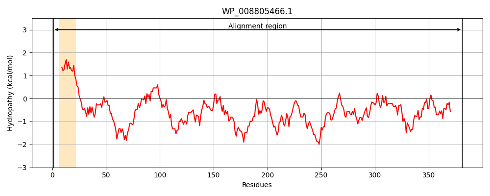
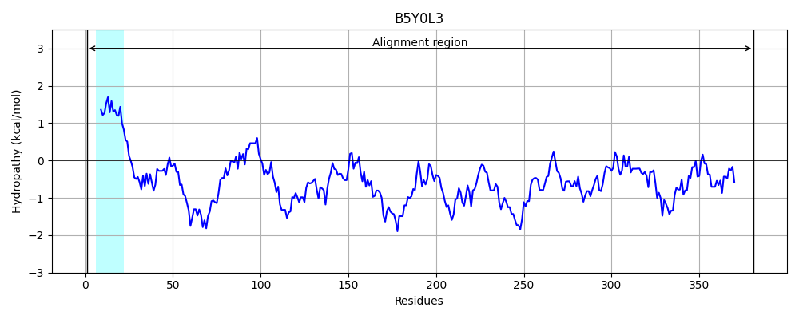
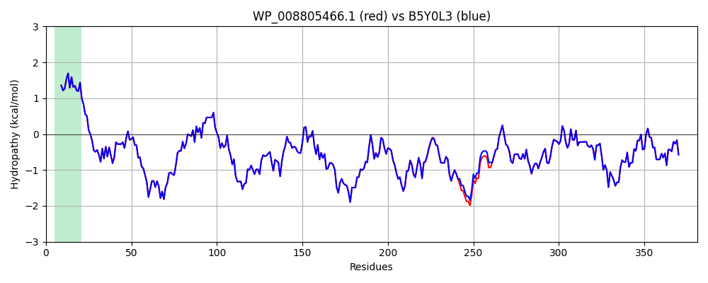

Hit Accession: B5Y0L3
Hit TCID: 1.B.1.1.18
Hit Description: gnl|BL_ORD_ID|1937 gnl|TC-DB|B5Y0L3|1.B.1.1.18 Uncharacterized protein OS=Klebsiella pneumoniae (strain 342) GN=KPK_4204 PE=4 SV=1
Mach Len: 381
e:0.000000
Query TMS Count : 1
Hit TMS Count: 1
TMS-Overlap Score: 0.850000
Predicted Substrates:CHEBI:25367;molecule
BLAST Alignment:
Score: 2073 , Bit scores: 803 bits, E-value: 0.0e+00, Alignment length: 381, Percentage identity: 99
Query: 1 MAHKIKALAVSIGATLVFASFASHAEITLLKQDPQAGDPLSRLNFTVGGSIRPQFNMMSGDGDKGSYKRNGFDGGTRFRFAADYYLFDDISWISYYELGVNIPALFDWDNHYAEGANNTTRRMLYTGLKSDTWGTLTYGQQNSIYYDVVGVKTDIWDYDMIGQAPGNGINGDYDGSYRSRNMLKYKKTVGDVDLYGSYLFEDSEYLPGNGLRYKRKGGGSIGADYHIMKDLTWGTAWNYTRAEMRDPSSADNKTYDQNIVGTALSWTPDNWTFSFGGGWYQNFLTTKKTDVHNYFAGDAWGIEYFAGYKFPINQYAVKSIQPYFMGDRLQYVNGRNYQRIDNGLGISFQLDYGFRVDYEHVFTSSTDNLGDMNLVRLRYDF 381
MAHKIKALAVSIGATLVFASFASHAEITLLKQDPQAGDPLSRLNFTVGGSIRPQFNMM+GDGDKGSYKRNGFDGGTRFRFAADYYLFDDISWISYYELGVNIPALFDWDNHYAEGANNTTRRMLYTGLKSDTWGTLTYGQQNSIYYDVVGVKTDIWDYDMIGQAPGNGINGDYDGSYRSRNMLKYKKTVGDVDLYGSYLFEDSEYLPGNGLRYKRKGGGS+GADYHIMKDLTWGTAWNYTRAEMRDPSSAD+KTYDQNIVGTALSWTPDNWTFSFGGGWYQNFLTTKKTDVHNYFAGDAWGIEYFAGYKFPINQYAVKSIQPYFMGDRLQYVNGRNYQRIDNGLGISFQLDYGFRVDYEHVFTSSTDNLGDMNLVRLRYDF
Sbjct: 1 MAHKIKALAVSIGATLVFASFASHAEITLLKQDPQAGDPLSRLNFTVGGSIRPQFNMMTGDGDKGSYKRNGFDGGTRFRFAADYYLFDDISWISYYELGVNIPALFDWDNHYAEGANNTTRRMLYTGLKSDTWGTLTYGQQNSIYYDVVGVKTDIWDYDMIGQAPGNGINGDYDGSYRSRNMLKYKKTVGDVDLYGSYLFEDSEYLPGNGLRYKRKGGGSVGADYHIMKDLTWGTAWNYTRAEMRDPSSADSKTYDQNIVGTALSWTPDNWTFSFGGGWYQNFLTTKKTDVHNYFAGDAWGIEYFAGYKFPINQYAVKSIQPYFMGDRLQYVNGRNYQRIDNGLGISFQLDYGFRVDYEHVFTSSTDNLGDMNLVRLRYDF 381 | Protein Hydropathy Plots: |
|---|
|  |  |
Pairwise Alignment-Hydropathy Plot:
|
|---|
|  |